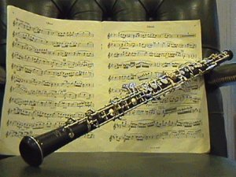

Oboj
00
Instrument dety drewniany z grupy aerofonow dwustroikowych. Oboj nalezy do grupy instrumentow z podwojnym trzcinowym stroikiem. Do tej samej rodziny naleza takze rozek angielski, fagot i kontrafagot. Powszechnie skala (zakres dzwiekow muzycznych) instrumentu wynosi od b do g3, rzadziej do a3. Osiagniecie wysokosci dzwiekow wyzszych (do c4) wymaga duzych umiejetnosci grajacego. Instrument ten to podluzna rura, lekko stozkowa, zakonczona lejkowatym rozszerzeniem. Otwory nawiercone na dlugosci instrumentu otwierane i zamykane sa klapami. W instrument dmie sie za posrednictwem cienkiej, metalowej rurki (otoczonej korkiem, na która nawija sie podwojna trzcinke) ze stosunkowo duzym cisnieniem, a jednoczesnie niewielka iloscia powietrza. Stroik umieszczony u wylotu rurki, sklada sie z dwoch listkow wykonanych z trzciny o nazwie ARUNDO DONAX – i zlozonych ze soba. Powietrze przeplywajac pomiedzy nimi wywoluje ich wibracje, drganie. Korpus instrumentu tradycyjnie wykonywany jest z drewna, najczesciej afrykanskiego blackwoodu, istnieja takze egzemplarze wykonane z drewna rosewood. Standardowa dlugosc instrumentu wynosi ok. 60 cm. Oboj charakteryzuje sie melancholijnym, spiewnym i dosc przenikliwym brzmieniem, co predestynuje go do roli instrumentu solowego. Zwykle powierza mu sie w orkiestrze partie kantylenowe. Swietnie sprawdza sie takze w muzyce filmowej. |